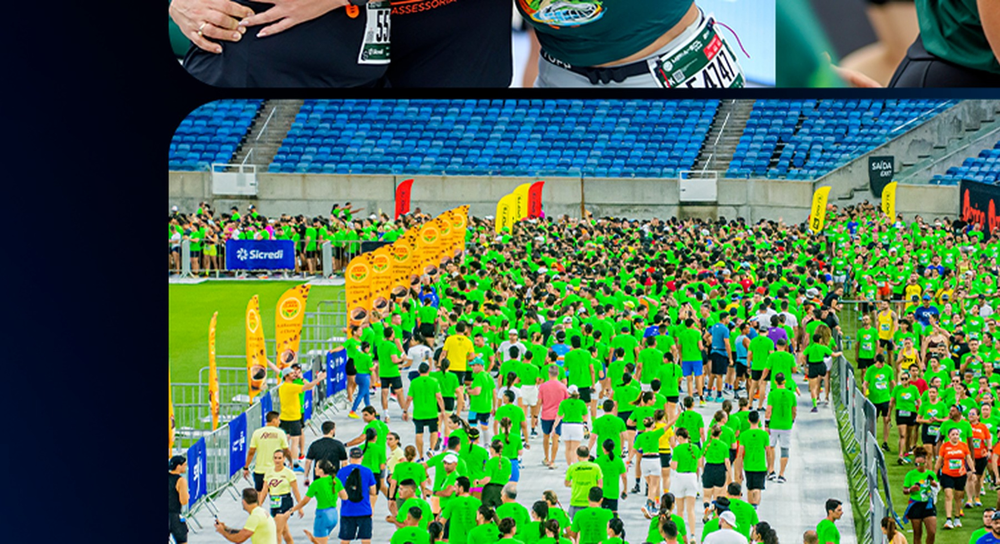

Sábado · 19 set
5K
Largada e chegada na Arena das Dunas. A programação começa às 15h30, com ondas organizadas por categoria e ritmo.
Ver prova 5K
A Meia Maratona do Sol reúne provas de 5K, 10K e 21,097K, além dos desafios de 26K e 31K. Largadas e chegadas acontecem na Arena das Dunas, em Natal.
Domingo · 20 de setembro
A elite dos 21,097K larga às 4h50. Depois entram PCD e as ondas gerais. Enquanto os atletas avançam, a luz muda sobre a cidade e o percurso segue da Arena das Dunas em direção à Via Costeira, antes do retorno ao estádio.
Ver percursos e horáriosProvas 2026
Escolha a distância e consulte data, horário e formato da prova. Categorias, premiação, documentação e regras ficam disponíveis na página de cada distância e no regulamento oficial.
Sábado · 19 set
Largada e chegada na Arena das Dunas. A programação começa às 15h30, com ondas organizadas por categoria e ritmo.
Ver prova 5KSábado · 19 set
Largada e chegada na Arena das Dunas. O percurso passa pela UFRN e pelo entorno do Parque das Dunas.
Ver prova 10KDomingo · 20 set
A meia larga antes do amanhecer, segue em direção à Via Costeira e retorna à Arena das Dunas.
Ver prova 21KDois dias de prova
Desafio que combina a prova de 5K no sábado com a meia maratona no domingo.
Ver desafio 26KDois dias de prova
Desafio que combina os 10K do sábado com os 21,097K do domingo.
Ver desafio 31KPercursos 2026
Nos 21,097K, a largada acontece na Arena das Dunas e o percurso segue em direção à Via Costeira antes do retorno ao estádio.
A meia atravessa a BR-101, segue pelo viaduto de Ponta Negra e alcança a Via Costeira, com retorno para a chegada dentro da Arena das Dunas.
A experiência em imagens
As imagens registram o que o atleta encontra ao longo dos dias do evento: Arena, chegada, família, Expo, Meia Kids e os momentos compartilhados entre quem corre e quem acompanha.


Escala e reconhecimento
atletas inscritos em 2025
passagens pela Arena em quatro dias
World Athletics
Confederação Brasileira de Atletismo
Patrimônio Cultural Imaterial do estado
Para quem vai correr
Aqui ficam as informações práticas para organizar sua participação: guia, retirada de kit, percursos, hospedagem e regulamento. Perto do evento, esta área ganha prioridade na navegação.
Horários, acessos, serviços e orientações para os dias do evento.
Expo na Arena das Dunas, de 17 a 19 de setembro, das 9h às 20h.
Mapas oficiais, ondas de largada, horários e atualizações de cada distância.
Informações para quem vem de outras cidades e condições divulgadas pelos hotéis parceiros.
Regras oficiais de participação, categorias, documentação, premiação e operação da prova.
Meia do Sol Sicredi Kids
A Meia Kids organiza as corridas por faixa etária e recebe criança e acompanhante em um ambiente preparado para esporte, convivência e diversão.
O que acompanha a experiência
As opções de inscrição, valores e regras ficam concentradas no ambiente oficial da Meia Kids.
Parceiros 2026
A Meia do Sol acontece com o trabalho conjunto de patrocinadores, chancelas, parceiros e realizadores. Aqui estão as marcas que apoiam a estrutura entregue aos atletas e ao público.
Naming Rights

Patrocínio
Chancelas
Realização